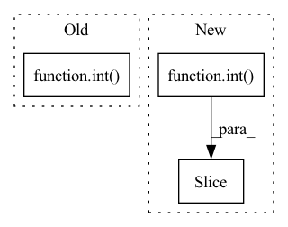

Pattern ID :26431
Before Change
bags_LUAD_path = pd.read_csv("datasets/LUAD.csv")
bags_LUSC_path = pd.read_csv("datasets/LUSC.csv")
cut_LUAD = int( len(bags_LUAD_path)*0.8)
cut_LUSC = int(len(bags_LUSC_path)*0.8)
train_bags_LUAD_path = bags_LUAD_path.iloc[0:cut_LUAD, :]
train_bags_LUSC_path = bags_LUSC_path.iloc[0:cut_LUSC, :]
test_bags_LUAD_path = bags_LUAD_path.iloc[cut_LUAD:, :]After Change
bags_path = pd.read_csv("datasets/tcga-dataset/TCGA.csv")
train_path = bags_path.iloc[0:int(len(bags_path)*0.8), :]
test_path = bags_path.iloc[int(len(bags_path)*0.8) :, :]
for epoch in range(1, args.num_epoch):
train_path = shuffle(train_path).reset_index(drop=True)In pattern: SUPERPATTERN
Frequency: 3
Non-data size: 3
Instances Fragment ID: 79263963
Project Name: binli123/dsmil-wsi
Commit Name: 85d914d0cca31c59f5e76e7894fadb15e8d2659d
Time: 2020-11-19
Author: bli346@wisc.edu
File Name: .ipynb_checkpoints/train_tcga-checkpoint.py
M Class Name: AnonimousClass
N Class Name: AnonimousClass
M Method Name: main(0)
N Method Name: main(0)
M Parent Class:
N Parent Class:
M File Name: .ipynb_checkpoints/train_tcga-checkpoint.py
N File Name: .ipynb_checkpoints/train_tcga-checkpoint.py
M Start Line: 125
M End Line: 135
N Start Line: 125
N End Line: 131
Before Change
crop_starts = tuple(np.array(x.shape).astype(np.int) * 0)
crop_ends = [x.shape[0], x.shape[1], x.shape[2]]
for dim in im_size:
crop_ends.append(int( dim) )
x = x[tuple(map(slice, crop_starts, crop_ends))]
// scalingAfter Change
x = tf.signal.ifft3d(x)
// crop to output size
x = x[:, :, :int(im_size[0]), :int( im_size[1]) ]
if tf.size(grid_size) == 3:
x = x[..., :int(im_size[2])]
Fragment ID: 79263965
Project Name: zaccharieramzi/tfkbnufft
Commit Name: 57d38b3ec6acbbeb2fbe097af88f1cdba726e282
Time: 2020-03-01
Author: zaccharie.ramzi@gmail.com
File Name: tfkbnufft/nufft/fft_functions.py
M Class Name: AnonimousClass
N Class Name: AnonimousClass
M Method Name: ifft_and_scale_on_gridded_data(5)
N Method Name: ifft_and_scale_on_gridded_data(5)
M Parent Class:
N Parent Class:
M File Name: tfkbnufft/nufft/fft_functions.py
N File Name: tfkbnufft/nufft/fft_functions.py
M Start Line: 73
M End Line: 82
N Start Line: 73
N End Line: 83
Before Change
random.shuffle(indexList)
trainIndex = indexList[:int(n_data*0.6)]
evalIndex = indexList[int(n_data*0.6):int(n_data*0.8)]
testIndex = indexList[int(n_data*0.6):int( n_data*0.8) ]
return trainIndex, evalIndex, testIndex
After Change
ratingsGraph = self.g_1
n_edges = ratingsGraph.num_edges()
random_int = th.randperm(n_edges)
train_idx = random_int[:int(n_edges*0.6) ]
val_idx = random_int[int(n_edges*0.6):int(n_edges*0.8)]
test_idx = random_int[int(n_edges*0.6):int(n_edges*0.8)]
Fragment ID: 79263967
Project Name: bupt-gamma/openhgnn
Commit Name: c659d9bfe018a9cc070bb0fdfd1a41b59760c47f
Time: 2021-09-07
Author: 34649403+Theheavens@users.noreply.github.com
File Name: openhgnn/dataset/RecommendationDataset.py
M Class Name: KGCN_Recommendation
N Class Name: KGCN_Recommendation
M Method Name: get_idx(2)
N Method Name: get_idx(2)
M Parent Class: RecommendationDataset
N Parent Class: RecommendationDataset
M File Name: openhgnn/dataset/RecommendationDataset.py
N File Name: openhgnn/dataset/RecommendationDataset.py
M Start Line: 32
M End Line: 39
N Start Line: 32
N End Line: 38